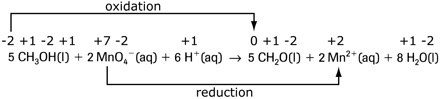
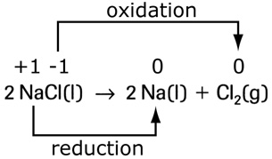
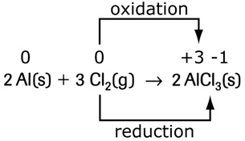

Module 3—Electrochemical Reactions
 Self-Check Answers
Self-Check Answers
Contact your teacher if your answers vary significantly from the answers provided here.
SC 2.
Practice 6.

b. Carbon is oxidized from –2 in methanol to 0 in methanal.
c. Manganese is reduced from +7 in permanganate ion to +2 in manganese(II) ion.
Practice 7.
a.  (redox)
(redox)
b. (not redox)
c. (redox)
d.  (redox)
e. (not redox)
f.  (redox)
g. (redox)
h. (redox)
Practice 8.
a. single replacement e. double replacement
b. double replacement f. formation
c. single replacement g. complete combustion
d. simple decomposition h. decomposition (but not simple)
Double replacement reactions do not appear to be redox reactions.
Practice 9.
In H2O2(l), the oxidation number of oxygen is –1, because the compound is a peroxide (see “Table 1” on page 583 of the textbook). If it reacts with a strong-enough oxidizing agent, it will be converted to O2(g) and H+(aq), and the oxidation number of oxygen will increase from –1 to 0, which is an oxidation process. If H2O2(l) reacts with a strong-enough reducing agent, it will be converted to H2O(l), and the oxidation number of oxygen will decrease from –1 to –2, which is a reduction process.